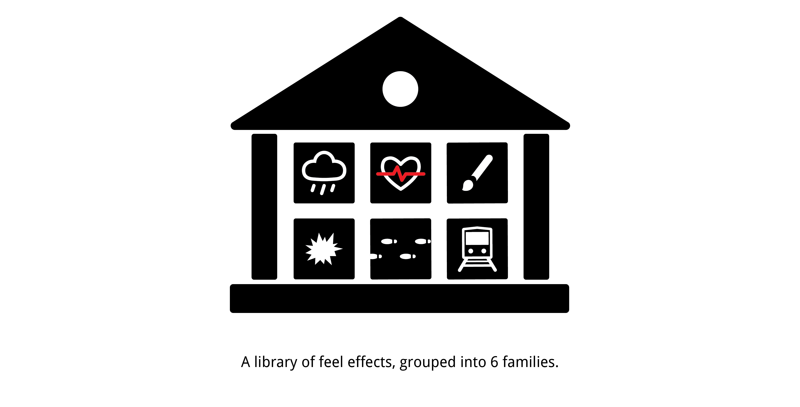

Research/Interactive Technology
2014
Project Description
The word haptics refers to the sense of touch. In technology, haptics are commonly used in phones that vibrate to alert users or in game controllers to enhance entertaining experience. Unlike artists who use sound or vision, haptic designers cannot simply access libraries of meaningful effects that can be used directly in media content. Furthermore, they lack even guiding principles for creating such effects.
In our research, we built a library of haptic sensations, called feel effects. They are meaningful haptic signals that deliver semantic meanings. These feel effects are grouped using semantics into 6 families, Rain, Pulse, Brush, Strike, Travel, and Motor Sounds. With this haptic library in hand, haptic designers could easily pick and add haptic sensations to their own content.
My role
As a researcher in the team, my job was to design studies to investigate whether or not people would associate haptic signals with semantics. Knowing this would allow future works on integrating the haptic signals in media content, e.g., movies and games, to boost users' enjoyment.
On the side, I also designed the icons for the families.
User Studies
I participated in designing two user studies. The first study asked participants to generate feel effects for words given to them, such as heavy rain, poke, knock and etc. They completed this task by sliding 2-3 sliders, each controlling a parameter that defined the feel effects.
From the first study, we calculated the parameter values that the majority of the participants chose for each word. To test that these parameter values are good representations for the words given to them, we ran the second user study, where the participants would rate on a 5-point scale whether or not a feel effect is a good representation of its corresponding phrase. We also matched feel effects with other phrases to check if there was a one-to-one correspondence between a feel effect and its paring word.
In our second study, we also paired synonyms of words from the first study with their corresponding feel effects. This can effectively broaden the haptic vocabularies. Results from the second user study showed that people can associate the feel effects from study one with their underlying semantic meanings. In other words, people can "comprehend" the feel effects just like how they can understand words when prompted.
The two user studies suggested future opportunities to integrate feel effects with movies, games and so on for richer entertainment experience.
Hardware
To deliver the feel effects in our user study, we built a chair pad that can receive signals and play haptic sensations from an iPad.

Publication
Our paper was published in Transactions on Applied Perception. Download the paper here.
We also presented this work at Siggraph 2014. Check out our poster here.